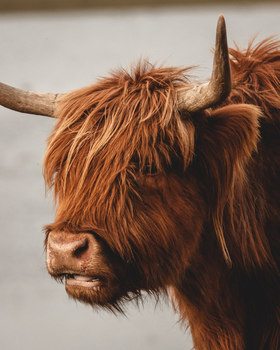

The Highland is a Scottish breed of rustic cattle. It originated in the Scottish Highlands and the Outer Hebrides islands of Scotland and has long horns and a long shaggy coat. It is a hardy breed, bred to withstand the intemperate conditions in the region.
They have distinctive horns and long, wavy, woolly coats that can be a range of colours, including red, ginger, black, dun, yellow, white, grey, tan, silver and brindle.